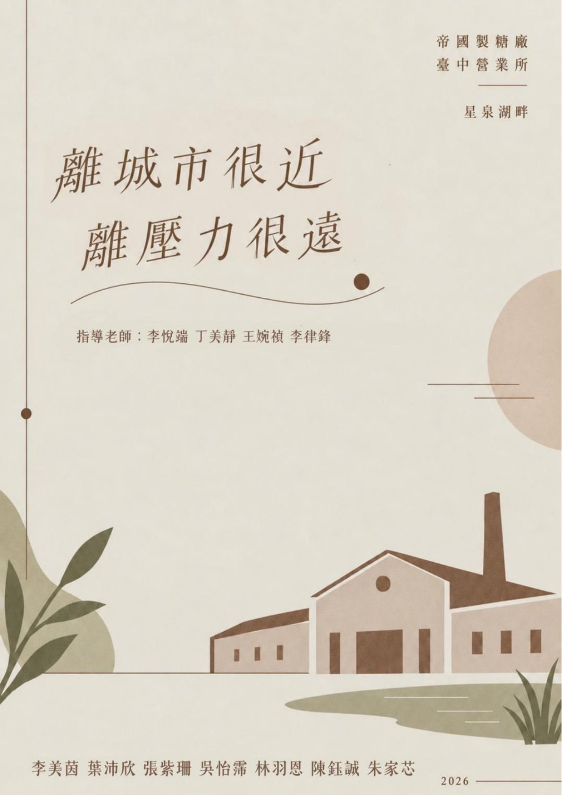
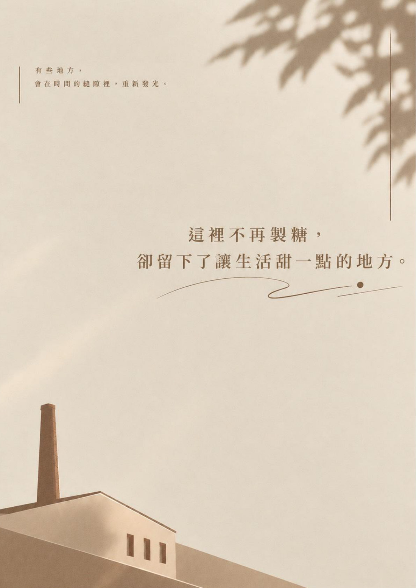

一、組員 朱家芯 李美茵 陳鈺誠 張紫珊 吳怡霈 林羽恩 葉沛欣 二、指導老師 李悅端老師、丁美靜老師、王婉禎老師、李律鋒老師 三、企劃書封面  期中企劃書封面  期中企劃書封底 四、參考資料 臺中市文化資產處：館舍及園區參觀資訊 臺中市東區區公所：帝國製糖廠臺中營業所 國家文化記憶庫：帝國製糖廠臺中營業所暨附屬設施 臺中市政府：歷時 6 年成功轉型！帝國製糖廠風華再現 資料整理日期：2026 年 11 月 5 日。 上一頁 1 2 3 4 5